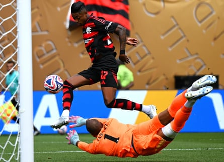

“M any people didn’t believe this would happen. It is happening,” said Fluminense manager Renato Gaúcho as he reflected on the performances of the Brazilian teams at the Club World Cup. With Fluminense, Palmeiras, Botafogo and Flamengo all on their way to the last 16, Renato said that Brazilian football and people should be “very proud” of what their clubs have done in the US.
The results in the group stage were impressive. Botafogo beat European champions Paris Saint-Germain; Flamengo won convincingly against Chelsea; and the only defeat for a Brazilian team – when Botafogo lost to Atlético Madrid – came when they had an eye on the knockout stage. In all, they played 12 games, lost one and only conceded nine goals.
The last 16 kicks off on Saturday, with Botafogo v Palmeiras in Philadelphia. The tie resumes a rivalry that has been at the forefront of Brazilian football in recent years. While it’s not an historic conflict or one based on geographical proximity, the clubs have been at loggerheads as they have battled for the Brasileirão title. Consider it a Brazilian version of the Manchester City v Liverpool rivalry – but with a bit more spice.
In 2023, Botafogo built up a 15-point lead in the title race but started to fritter it away. By the time they met Palmeiras towards the end of the campaign, their lead was down to six points. Botafogo raced into a 3-0 lead in their crunch match but Endrick inspired a 4-3 comeback. In the end, Palmeiras denied Botafogo the title and snatched it for themselves. Afterwards, Botafogo’s majority owner John Textor went on a rampage, accusing Palmeiras of corruption . Leila Pereira, the Palmeiras president, called Textor’s accusations “irresponsible and criminal” and dubbed him the “embarrassment of Brazilian football”. The feud between the two leaders is one of the biggest subplots before their match on Saturday, with rival fans telling Botafogo supporters to enjoy themselves before Textor sinks their club à la Lyon .
Botafogo recovered from their heartbreak in 2024, becoming just the fourth team in history to do a league and Libertadores double. To make their revenge even sweeter, they eliminated Palmeiras in the last 16. They have struggled in the league this season though, especially after losing their best players in Luiz Henrique and Thiago Almada (who is on loan at one of Textor’s other clubs, Lyon), as well as their manager. So their success at the Club World Cup – including that standout victory against PSG – has come as a welcome surprise.
We’ve been talking to their defender Vitinho – who spent a few years at Burnley – and he is feeling confident. “We have a very strong team, we know our potential and we never stopped believing,” he says. “As long as we have a chance, we will fight to the fullest. We worked hard, we believed and we achieved our goal, which was to qualify from the group stage. We knew we would face a very tough team in the round of 16. It will be like that until the end. We have had great duels against Palmeiras in recent years, memorable moments for both teams, and this will be another very important game for both clubs.”
On the other side of the rivalry, Palmeiras goalkeeper Weverton says he and his teammates have been preparing for the Club World Cup for a long time and are satisfied with their performances so far. “It was a good start, we’re on the right track,” he said. “This competition, playing against the best teams in the world, is a great opportunity for everyone to show their worth. And the Brazilian teams are doing it very well. It is up to us to maintain this level and improve, because the pressure will only increase. We have great opportunities to advance in the competition.”
He knows that Botafogo will be tough opponents. “A Brazilian confrontation is always difficult because you know the characteristics of the players, but at this point you can’t choose your opponents. It will be difficult for Palmeiras, as it will be difficult for Botafogo; they are two great teams. Brazilian football has won here; we will have a Brazilian team in the quarter-finals. This values our football.”
Vitinho and Igor Jesus celebrate as Botafogo score against the Seattle Sounders.Photograph: Ezra Shaw/Getty Images
Flamengo, the current league leaders in Brazil, have been dealt a tough draw in the last 16, where they face Bayern Munich. Having won their group, it looked as though Flamengo would play Benfica or Boca Juniors in the last 16 but Vincent Kompany’s decision to rest players against Benfica backfired on Bayern – and Flamengo. The winner of their last-16 tie will meet Paris Saint-Germain or Inter Miami in the quarter-finals then possibly Real Madrid in the semis.
Focusing on the first task in hand, club icon Zico joked that “we have an advantage, because we’ve only ever played one game against Bayern and it was 3-1 to Flamengo”. He’s not referring to a past Intercontinental Cup, though, but rather a match at the Kuala Lumpur International Tournament in 1994. Flamengo were awarded $20,000 for that victory. The stakes will be far higher in Miami on Sunday night.
Flamengo manager Filipe Luís is full of respect for Bayern, calling them “dominant”, a “colossus” with “an extraordinary squad” and “an excellent coach” and one of the top tier of European clubs that are above anything South America can offer. “They’re a club that inspires us and gives us ideas to copy, but in a game anything can happen,” he added.
Filipe Luís knows Flamengo face an uphill battle but he wants his team to keep their identity and, if they are to go out, to do so on their own shield. “Flamengo’s DNA requires you try to take the ball away from the opponent, try to press, control the game and be as vertical as possible,” he said. “That is what we will try to do. We know their quality and the way they play. They will try to impose their rhythm, and we will try to do the same. In the end, may the best team win.”
Flamengo beat Chelsea and topped their group.Photograph: Xinhua/Shutterstock
Some Flamengo fans have taken umbrage with what they perceive to be Bayern rolling over for Benfica and settling for second place. It’s a strategy Fluminense appeared to adopt as well. They rested players and drew with Mamelodi Sundowns, perhaps as a means of playing either River Plate or Monterrey in the last 16. With Dortmund and Inter winning, though, and Fluminense picking up just a point, the 2023 Libertadores winners will now face Inter.
“Now, there is no easy game,” says their manager Renato, who has also echoed the idea that knockout football is about more than money. “It’s no use having a team of 500m, football is on the field,” he said. Fluminense have their own veterans, such as Thiago Silva at the heart of their defence, but perhaps it’s the perfect moment to pounce on a crestfallen and ageing Inter side after their hammering against PSG.
This is an article by Tom Sanderson and Josué Seixas